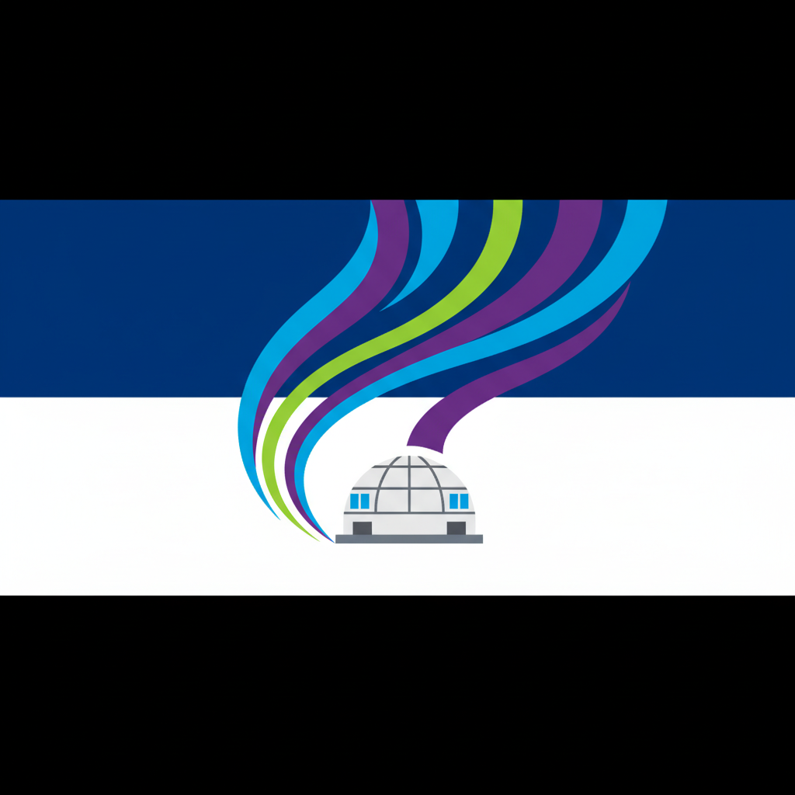
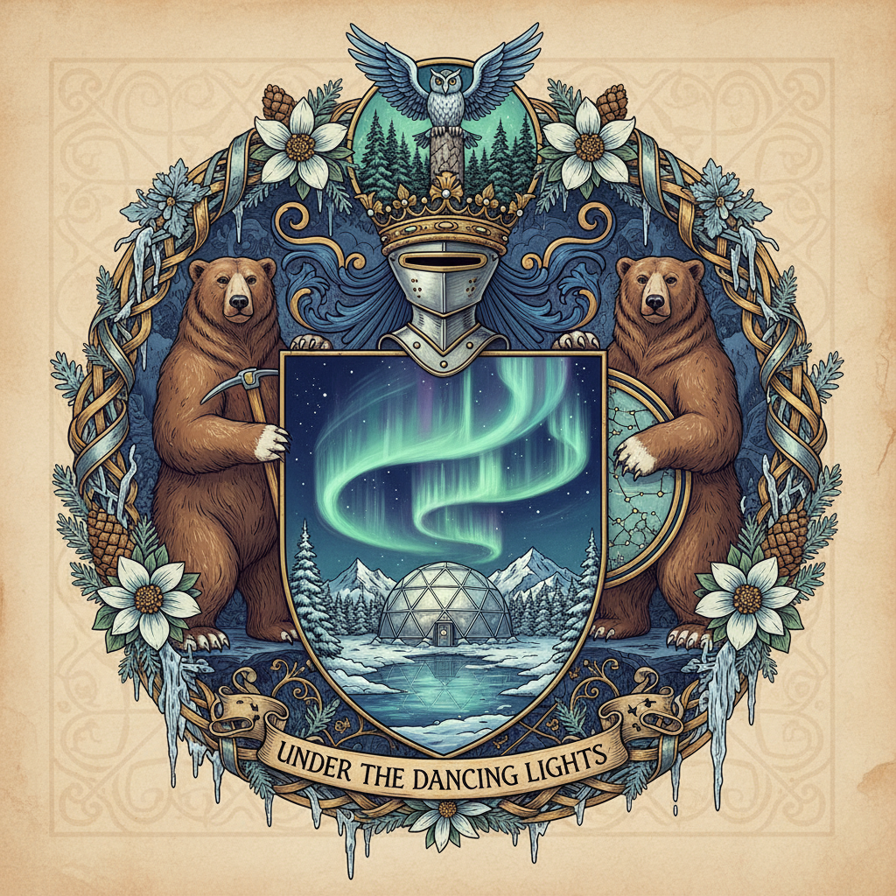

Borealis Station is a settlement located in NorKunta, Antarmund. It is situated at an altitude of 1495m and is characterized by a Tundra Plains climate.
Description
Atmospheric research hub and 'Aurora Harvesting' energy arrays.
|
  "Under the Dancing Lights"
| |
| Continent | Antarmund |
|---|---|
| Country | NorKunta |
| Type | Settlement |
| Population | 60,000 |
| Altitude | 1495m |
| Climate | Tundra Plains |
| Heraldry | A stylized aurora over a research dome. |
| Coordinates | [773.9, 1658.5] |
Borealis Station is a settlement located in NorKunta, Antarmund. It is situated at an altitude of 1495m and is characterized by a Tundra Plains climate.
Atmospheric research hub and 'Aurora Harvesting' energy arrays.
"High-altitude aerial night shot of Borealis Station, a sprawling settlement of 60,000 people on the frozen tundra. The layout is concentric, radiating out from massive central "Aurora Harvesting" tesla-coil towers that cast a green and purple glow over the city. Surrounding this energy core are dense rings of modular, heated residential blocks and large habitation domes, glowing with warm amber streetlights. The outer perimeter is lined with research labs and hangars. The scale is massive, a glowing jewel in the dark expanse of snow."